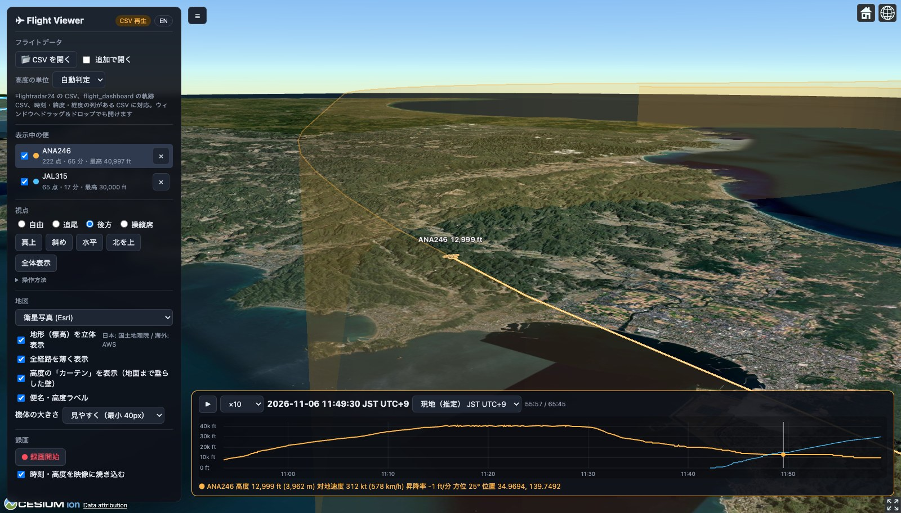
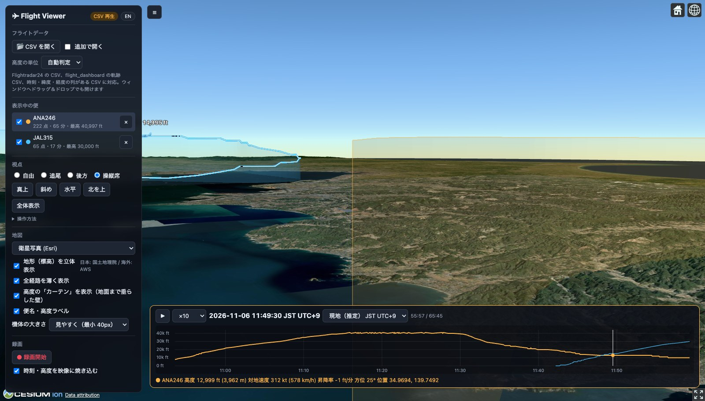

01
CSV を開くだけで、3D の再生
CSV をウィンドウにドロップすると、3D の機体が記録の時刻どおりに飛び、通ってきた軌跡を光る線で残します。全経路を薄く表示したり、地面まで垂らした「高度カーテン」で上昇・降下を立体的に見せたり。複数の便を色分けして重ねれば、同じ時間帯の動きを比べられます。
- ドラッグ＆ドロップ
- 複数便を色分け
- 高度カーテン
CSV × 3D REPLAY × CESIUMJS
Flightradar24 などで保存したフライトデータ（CSV）を開くだけで、3D の機体が記録の時刻どおりに地球儀の上を飛びます。高度の推移をグラフで追い、記録の中の出来事へワンクリックで移動。機体の後ろから、操縦席から、山並みや空港を眺めながら、あのフライトをもう一度たどれます。
macOS (Apple Silicon) · 日本語 / English · 登録・API キー不要
FEATURES
表計算ソフトでは見えなかった上昇・巡航・降下の様子や、旋回の位置関係が、3D の地球儀の上でひと目でわかります。
CSV をウィンドウにドロップすると、3D の機体が記録の時刻どおりに飛び、通ってきた軌跡を光る線で残します。全経路を薄く表示したり、地面まで垂らした「高度カーテン」で上昇・降下を立体的に見せたり。複数の便を色分けして重ねれば、同じ時間帯の動きを比べられます。

視点は「自由」「追尾」「後方」「操縦席」の 4 種類。ドラッグやキーで見回し、ホイールで距離を変えられます。地形表示をオンにすれば、日本は国土地理院、海外は AWS の標高データで山並みが立体に。進入経路と地形の関係もよくわかります。

画面下の高度グラフは全便の高度の推移を表示し、クリックやドラッグでその時刻へ移動します。CSV に note 列があれば「出来事」として一覧になり、クリックでその 5 秒前へ。通過するとバナーで知らせます。高度・対地速度・昇降率・方位も常に表示。

時刻は、最初の位置と日付から現地の時間帯を推定して表示します（米国の夏時間にも対応）。UTC・日本時間・米国東部時間などに切り替えも自由。画面は日本語と英語をボタンひとつで切り替えられ、再生の様子は時刻・高度入りの動画として録画できます。
CSV FORMATS
列名から自動で判別します。時刻・緯度・経度の 3 つがあれば、たいていの CSV は読み込めます。
ダウンロードした CSV（Timestamp・Position・Altitude など）をそのまま。高度はフィート
Flight Dashboard で保存した軌跡 CSV（観測履歴 / 離陸からの全経路）
time / timestamp・latitude・longitude の列。UNIX 時刻や ISO 8601、高度は列名で m / ft を判定
note 列に書いた内容が「出来事」として一覧・グラフ・バナーに表示されます
DESKTOP APP
インストールしてすぐ使えます。軽量な Tauri 製のアプリで、アカウント登録や API キーは不要です。
※ 地図と地形はその場でインターネットから取得するため、インターネット接続が必要です。フライトデータ（CSV）はお手元のファイルを読み込みます（アプリがフライトデータを取得・販売するものではありません）。録画は「ダウンロード」フォルダに保存されます。
再生される位置・高度は読み込んだ CSV の値を点と点の間で補間したもので、記録の精度に依存します。航空機の運航や事故調査などの判断には使用できません。CSV の利用は、それぞれのデータ提供元の利用規約に従ってください。